Free to forkNo licence and no copyright claim: build this game under your own name, or lift one idea from it. Why?
Game overview
Hazard Mission Team is a side-view settlement game about doing hard jobs in dangerous places for people who need them done. Your small team lands in a generated patch of wilderness, then digs, builds, hauls, fights and improvises until the job is finished: an ore field mined out, a nest cleared, a stranded crew rescued, an outpost standing where there was nothing.
Every job comes from a world map that remembers. Finish one and that corner of the map changes for the better: a village grows, a road appears, a factory opens, and the network you work for reaches a little further out, toward new continents, planets and stars.
Its heart is the settlement missions of Clonk Rage, rebuilt without the old game's soft-locks and awkward legacy systems, mixed with King Arthur's Gold's tile-based building and tools, a touch of falling-sand material behavior, and a persistent world map in the spirit of Reactorcore's Admiral Wars Beyond.
Target audience
People who loved digging and building in Clonk, Terraria or King Arthur's Gold, and the rescue shows of their childhood, from Thunderbirds to Bob the Builder.
They want to solve real-feeling problems with their hands and see that it helped someone, where most sandbox games leave them building for no one.
It's a mouse-and-keyboard game of moderate depth: simple to move and grab, with layers of tools, buildings and vehicles to learn at your own pace.
Game's purpose
Giving and contribution: every mission serves a client, and the world visibly gets better because of it.
Creation and understanding: working out how terrain, water, fire and machines behave, and building your way through.
Choice and variety: pick your jobs from a map full of them, each one generated for its place.
It deliberately avoids draining safety (no hopeless soft-locks: every mission can be finished from the barest start) and autonomy: any job can be passed on to someone else.
Core concept
Settlement and survival sandboxes usually hand you a world and no reason, so you build until you're bored, or run a fixed list of maps that ends.
Here the reason is built in: you're a service, and there are always clients. The jobs are generated to fit their place on the map, and finishing one changes that place for good.
Nobody runs out of work, and nothing you finished is ever thrown away.
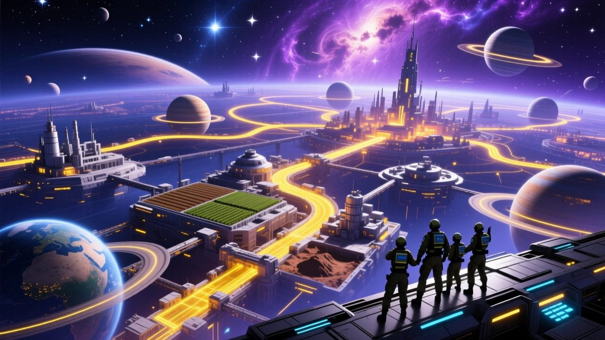
"The network keeps growing outward, and wherever it's about to grow next, the hazard team goes first."
Lore and story
The vanguard
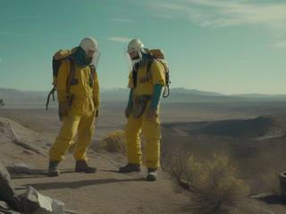
Across the galaxy, civilizations of every species are growing: cities, farms, ports, power plants, labs and the routes between them, on land, at sea, in the air and in space. Before any of it can reach a new place, someone has to go there first and make it possible. That's the hazard mission team: the spearhead, pathfinder and pioneer of every civilization, regardless of species or borders.
The team does the dangerous, one-off part of the job, and the permanent mass production follows in behind it once the area is safe.
The crews
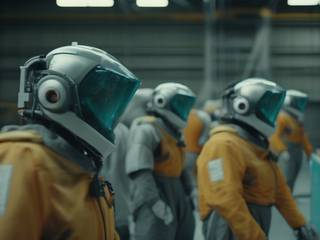
Missions are worked by rugged android bodies, each operated by a person safely back at base, with their own name, age and face. A body lost in a cave-in or a lava flow is a setback, not a funeral: the operator steps into the next body and goes back in. That's why the team takes jobs no one else will.
The work right now
The world map is full of jobs: opportunities, threats and curiosities, each one on a real place with real people nearby. Pick one, gear up, and go.
Controls and interface
You control one crew member at a time in side view, switching between them freely while the others carry on with their orders. Anything can be grabbed, carried, thrown or used, and the item under the pointer always offers its own actions. A suggested layout:
Move
A / D
Walk, run, push
W
Jump, climb ladders and walls
S
Crouch, drop through platforms
E
Enter or leave a vehicle or building
Hands
Mouse 1
Use the held tool: dig, build, saw, strike
Mouse 2
Grab anything near the pointer
Q
Throw what you're holding (hold for power)
F
Actions for whatever's under the pointer
Team
1 – 4
Switch to a crew member
Tab
The crew's inventories, as plain lists
R
Base menu: build, order supplies, call reinforcements
Mission
M
Map of the mission area and its objectives
Esc
Pause, save and quit
Inventories are simple lists rather than grids, as in Teleglitch, so the team's stock reads at a glance. The objectives panel always says what's done and what's left.
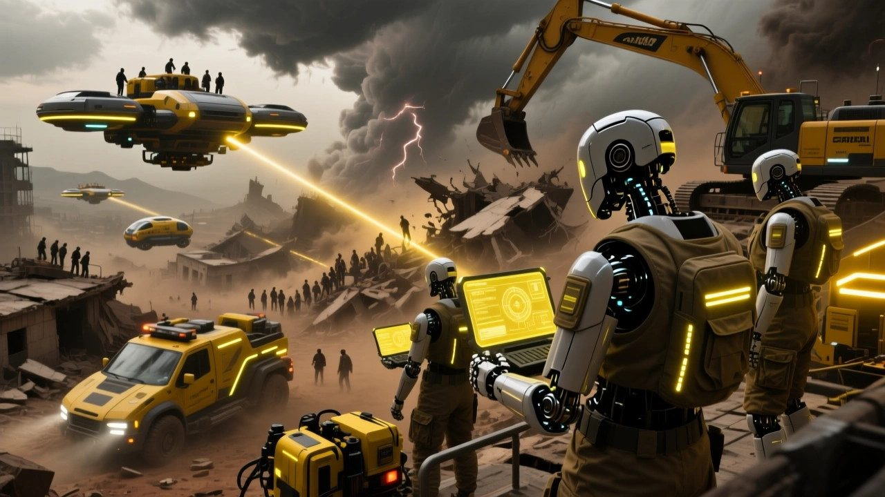
"Every job is generated to fit its place on the map: a flooded village gets a rescue, an ore field gets a mining crew."
Game layers
01 · Moment-to-moment
Working the site
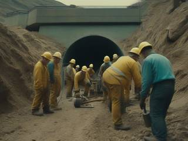
A mission map is a side-view slice of terrain: soil, rock, ore, sand, water and worse, with treasure, wildlife and hazards in it. Your crew of one to three lands at the entry point with what they could bring.
From there it's hands-on work. Tunnel to the ore and haul it up, build a lift and a power supply, wall off the water before it floods the base, push a cart, ride a vehicle, fend off whatever lives in the caves, and move fast when the earthquake hits.
02 · Low metagame
A chain of missions
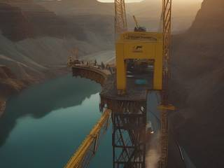
Missions usually come in generated chains: a short campaign of smaller jobs in one area that builds up to a super mission, where everything pays off in one big push. A road is cut through, then a bridge raised, then a city's new megaproject finished.
A chain has a clear start and a clear end. When the super mission is done, the area has something new to show for it: a monument, a city, an outpost, a factory, a sanctuary or a new road, and a new frontier beyond it.
03 · High metagame
The network
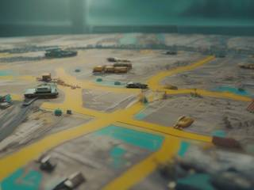
The world map is persistent. Its tiles belong either to the civilization you serve (resource zones, factories, cities, ports, farmland, reservoirs, parks, power plants, labs, depots, and the roads, sea lanes, air routes and space lanes between them) or to the wild beyond, full of opportunities, threats and curiosities.
Every finished mission delivers its goods to the civilization, which grows on its own: more people, more reach, and new places within range, out to other continents, planets, moons, asteroids and eventually other galaxies. Between missions you can tend your worlds, fixing what holds them back: pollution, too few farms, poor terrain, weak defenses. The map becomes a picture of everything you've done, and there's always another client at its edge.
04 · Practical game flow
A job an evening
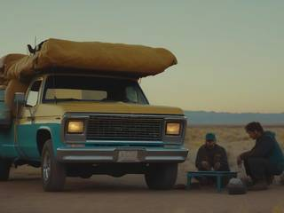
Open the map, pick a job or a chain, choose what to bring, and land. A single mission fits a session; a chain fills a few.
Missions can be saved and left mid-job, and the map waits between them. Jobs you're not in the mood for can wait too: claim one for later, or hand it to someone else.
Game modes
There's one mode: the network, a universe of work that never runs out. It nests from the whole map down to a single task:
The networkA persistent universe map that grows with every finished job.
A chainA generated campaign of jobs in one area, ending in a super mission.
A missionOne generated side-view map, one client, one or more objectives.
An objectiveMine this, clear that, build here, bring it there.
Features and mechanics
The heart of it
Ground you can dig, flood and build on
Missions take place in tile-based terrain where every material has its own behavior: hardness that decides what it takes to dig through it, sand that falls, water that flows and floods, fire that spreads, lava that burns, as in falling-sand games but kept to what play needs rather than a full simulation.
On that ground you build: block-by-block structures, traps and platforms in the manner of King Arthur's Gold, and buildings that produce goods, generate electricity or process one material into another, as in Clonk. Vehicles carry the load. Hand tools do the rest: drills, saws, lanterns, buckets, sponges, ladders, logs, seeds, bombs and explosive kegs, all picked up, used and thrown the same way.
The game is about being smart with that world: where to build, where to store things, and what to prepare before an earthquake, a flood, a volcano or a meteor shower arrives.
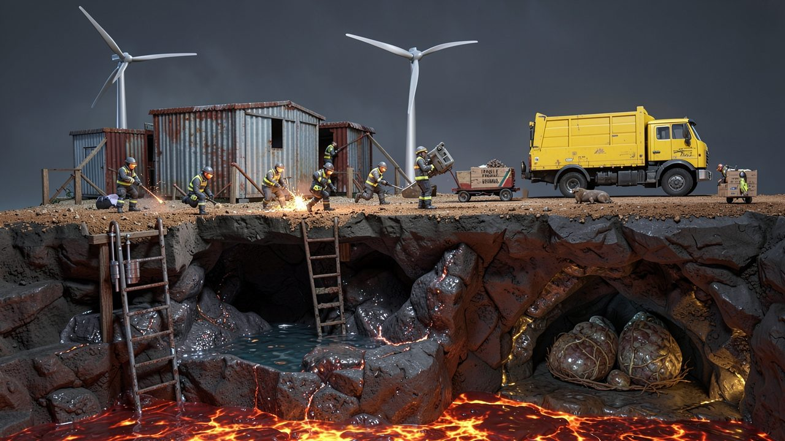
"Every material behaves its own way: sand falls, water floods, fire spreads, and hard rock needs the right tool."
Jobs that make sense
Missions generated for their place
Each mission map is generated by a heuristics-driven generator from the tile it sits on: a swamp job looks and plays like a swamp, a mining colony's job is about its mine. The jobs come in many kinds, often combined:
Job
For example
Resources
Mine, gather and deliver a quantity of something, easy to hard
Pest control
Clear a nest, hunt a monster, hold off an invasion, besiege a threat
Rescue
Lost and found, exploration, discovery, investigating an anomaly
Construction
Build an outpost, pave the way, build a machine somewhere specific
Transport
Get a vehicle, item, person or machine from one point to another
Nature care
Stabilize an environment that's going wrong
Security
Defuse a hostage situation, make an arrest
Cleanup
Ruins, debris, stains, breakdowns, a traffic jam
Don't want a job? Defer it: someone else takes it on, and the tile gets a skeleton crew's hut with signs saying the area is on hold. Nothing is lost except what you'd have built there.
Logistics as the difficulty
The farther out, the less you bring
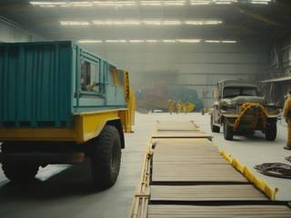
Before landing, you choose the loadout: people, tools, materials, vehicles, building kits. How much you can bring depends on how far the job is from the network. Near a city, you bring plenty and can order supplies and reinforcements during the mission. On a remote moon, you bring little, and most of what you need you'll have to set up on site.
So the hardest jobs are hard for a reason anyone can see: they're far away. And every mission is generated so that it can be finished even with the barest start.
A team built to be spent
Bodies are tools, operators are people
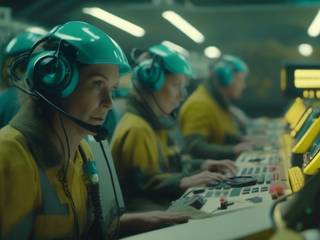
Crew bodies are plentiful and replaceable, as in King Arthur's Gold, so you can take risks a Clonk player never could: send someone down the unstable shaft, use a body to plug a leak, stand in front of the falling boulder. The people operating them have randomized portraits, names and ages, as in XCOM, and stay with you across missions.
Bodies can be fitted at base for different roles, such as a builder, a fighter or a scout, and any of them can grab, carry and throw anything, from a log to a chicken to a fallen teammate's body.
No dead ends
Failure that doesn't trap you
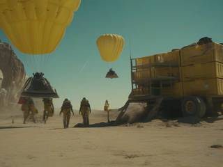
Clonk was famous for soft-locks: the last crew member lost, the critical resource wasted, the home base gone with no way to rebuild, a flood you started that can't be stopped. Here contingencies are built in: replacement bodies, resupply, ways to recover lost materials and a way out of every hole, so a mistake costs time and effort rather than the whole mission.
There's still a limit. If too many bodies are lost or the critical supplies run out, the mission fails. Nothing rewinds, and nothing punishes you: the civilization's bigger crews come in to clean up, the job gets done the slow way, and the map moves on with a new job waiting.
A map that remembers
The world gets better, visibly
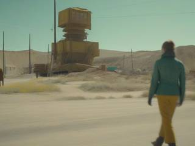
Every finished mission changes its tile, and often its neighbors: a cleared nest becomes farmland, a mined-out field becomes a town, a raised bridge joins two regions. Super missions leave monuments, new cities, outposts, factories, sanctuaries and roads behind.
Nothing on the map is a score. It's the record of the work and the people it helped, and it shows what's still left to do. Scroll out far enough and it's a picture of everything you've built.
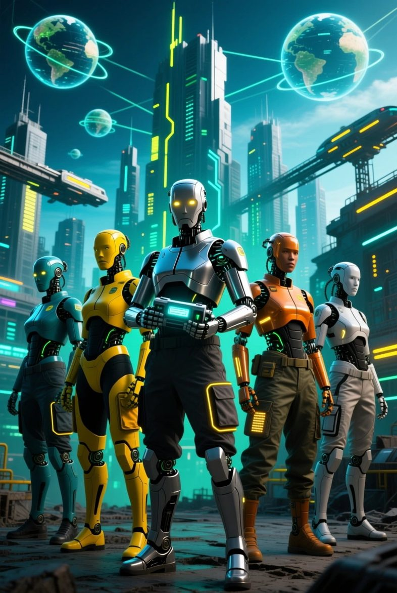
Now hiring, everywhere
Hazard Mission Team: Settlement Crisis Response
A village is flooding. A colony's mine has gone quiet. A city needs a bridge where there's only a canyon, and something is nesting in the canyon. The network needs someone to go first.
Bring what you can carry. Build what you can't. Leave the place better than you found it, and watch the map change behind you.